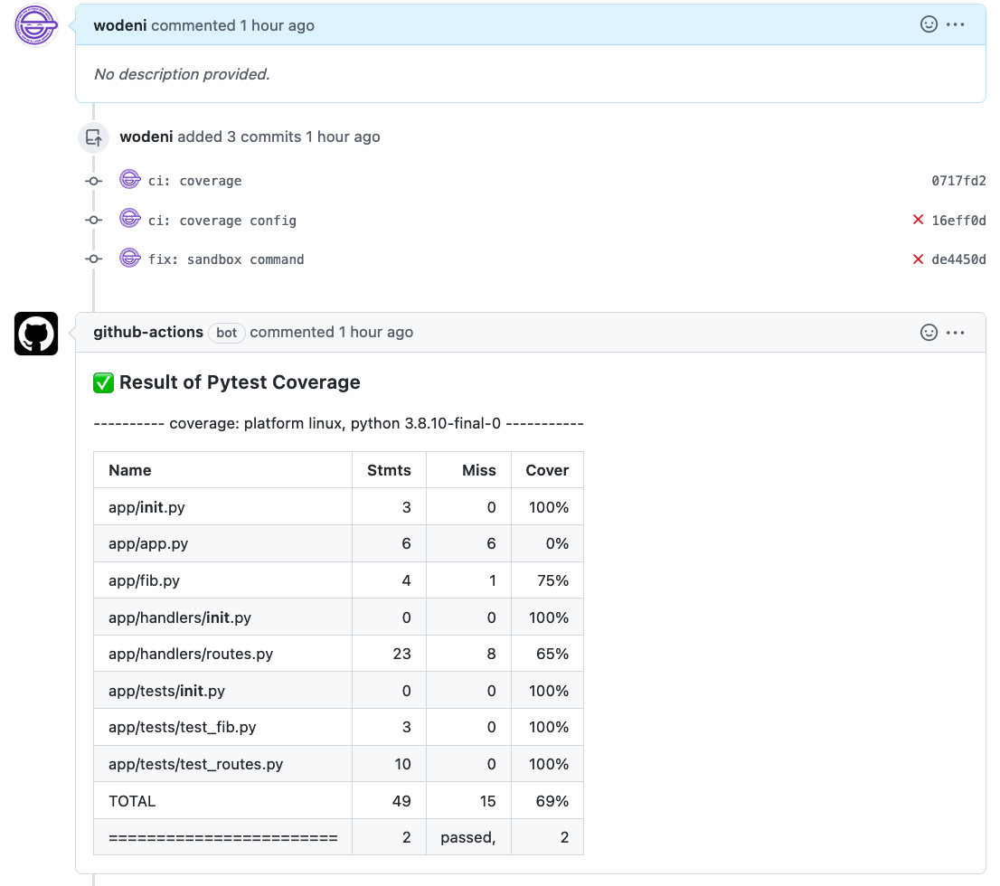

17-313: Foundations of Software Engineering
Recitation 8: static analysis and continuous integration
Static and dynamic analysis tools help you keep the codebase healthy. In this recitation, we will learn how to set up these tools in CI (GitHub Actions).
Step 1: Setup your sample Python repo
First, go to this template repo and use it to create your own repo. The repo is very similar to the HW4 repo, except that it comes with a failing test.
You already learned that it’s a big no-no to push directly to main. We can actually enforce this using branch
protect rules. Read the docs to understand what they are, and set the following rules:
- Requires a pull request before merging to
main - Requires tests to pass before merging to
main:- Search for the job name in the required checks (i.e.
testin this case.) You may need to save the settings first before this search box appears.
- Search for the job name in the required checks (i.e.
Your setting should look like this:

The failing test cases ❌ wouldn’t have been there if I had these rules enabled in the first place. Now, let’s fix our failing test.
Step 2: Fix the broken CI
The ❌ really shouldn’t have been there in the first place if I had these rules enabled. Now let’s fix
it. Branch off from main and create a PR
to fix the broken CI.
Take a look in the Actions page to see which test is failing. Branch off from main and create a PR to fix the broken CI.
(the fix should be VERY simple!)
The test job should pass on your PR. Click
“Squash and merge”* to merge after the status checks pass.
*: It’s just a lot cleaner than the default merge.
HINT: If you are really stuck on how to fix, click here
Step 3: Make your code pretty
Different tab sizes driving you crazy? Let’s use a tool to standardize them all. A code formatter, a static analysis tool, helps one identify and fix formatting issues in the codebase. Let’s use black as an example.
First, create another branch for setting up a code formatter.
Then, run the following commands to install it locally and try running it:
pipenv install --dev black:blackis only a development dependency. Your package doesn’t actually use it.pipenv run black . --check:- Runs
blackin the current directory.--checkdry-runsblackand don’t alter any files. - Observe some files on the list.
- Runs
pipenv run black .:- This will actually change the files.
- Run
git diffto observe the file changes.
Using CI, we can enforce formatting requirements using the same GH Actions + status checks. For popular tools, someone has done it before, and you can reuse their workflow.
- Go to this existing
blackActions on GH Marketplace - Click “Use lastest version” to see what needs to be added to
.github/workflows/main.yml - Add another job called “format” to the
main.ymlfile to useblackto check the file formatting - Push your formatted files to the branch and observe
formatpasses. - Squash and merge the PR
Step 4: Add test coverage to the CI workflow
Finally, you can also do some dynamic analysis. Since we are already using pytest, let’s use pytest-cov, a plugin that reports
test coverage.
First, install and try to use it locally:
- Create another branch
- Install
pytest-covlocally:pipenv install --dev pytest-cov - Runs
pytestwith coverage report:pipenv run pytest --cov=app
Now, let’s add another job in the workflow for reporting coverage:
- From the
testworkflow, copy the steps beforepytest - Now, run
pipenv run pytest --cov=appto report coverage - Push and observe the new check running
Bonus: report coverage in PRs
The coverage job doesn’t really add much to the workflow now since it doesn’t fail. Without being too strict about coverage, we can at least display the coverage status in the PR.
Somebody has already done it, so we can use it in our repo too. Hint: you should only need the last two steps in the workflow.
Note that this action will only run on pull request-based workflows, so you will need to modify your triggers.
If set up, the job will automatically comment on PRs with the coverage info: 